Plants of Concern: One brand and product system to protect rare plants.
2 min read
Volunteers track rare plants so scientists can protect them. I designed the brand, the monitoring app, the web app, and the marketing website that took that work off paper.
Scope
- Brand identity and illustration system
- Monitoring app
- Web app
- Marketing website
Outcomes
- Monitoring sessions cut from about 2 hours to about 40 minutes
- No more paper forms, external GPS units, or data entry at home
- 20% more volunteer sign-ups
- Program now runs across three Illinois regions
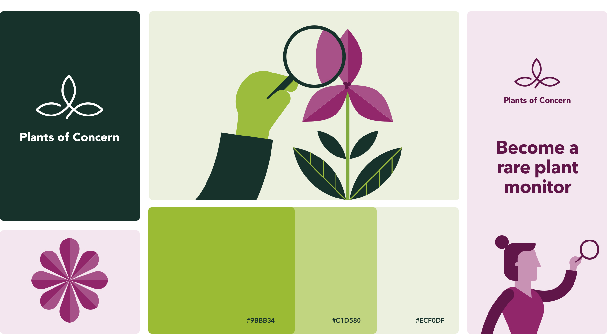
The challenge
Important data, collected on paper.
Monitors went into the field with a printed form and a GPS unit, scribbled notes on the fly, then entered everything into a web app once they got home.
That data matters: it informs conservation practices, and Illinois’ Endangered Species Protection Board uses it to assess threatened and endangered plants. I worked with a product manager and three developers, from kickoff to delivery, to make it easier to collect.
The brand
A scalable visual system, where nature meets technology.
The mission is to connect people and plants to support healthy humans and habitats. The logo comes from a native Illinois orchid, with its three parts standing for plants, people, and partnerships.
The illustrations represent the natural world in a geometric way, the meeting point of nature and technology at the core of Plants of Concern.
I designed visual elements that combine in many different ways, so the brand story stays consistent across digital, print, and social.
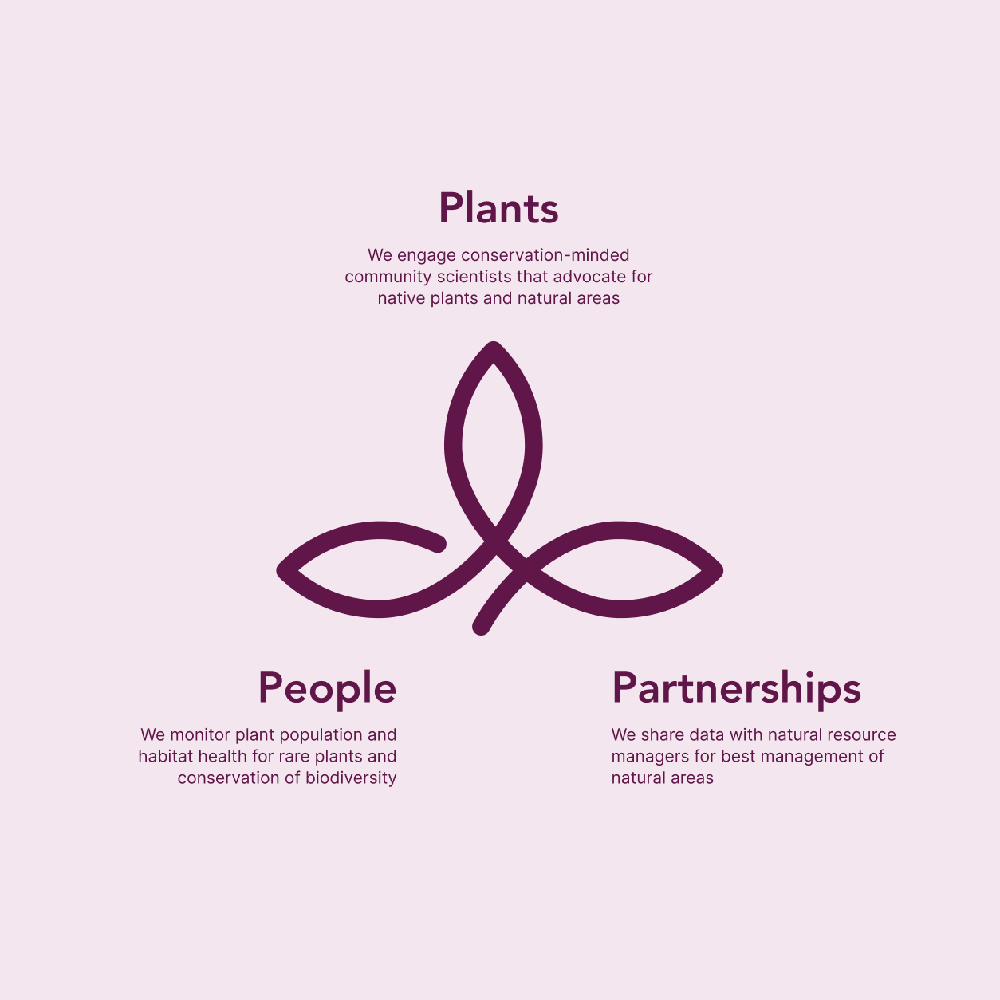
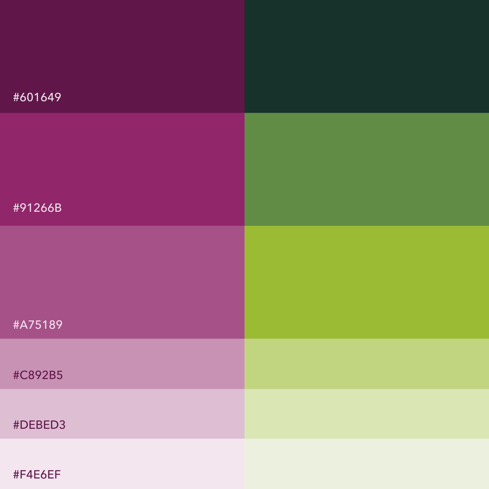
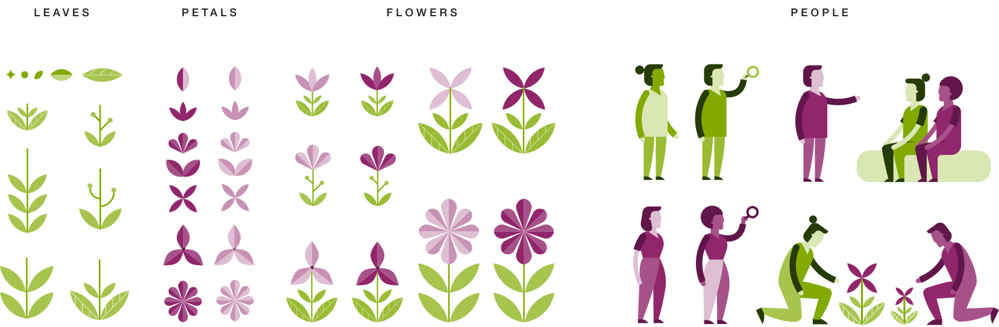
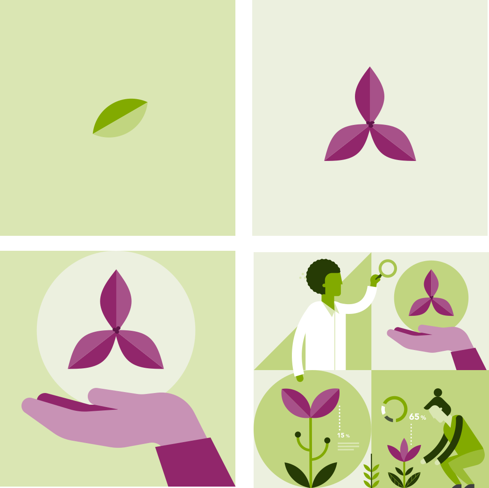
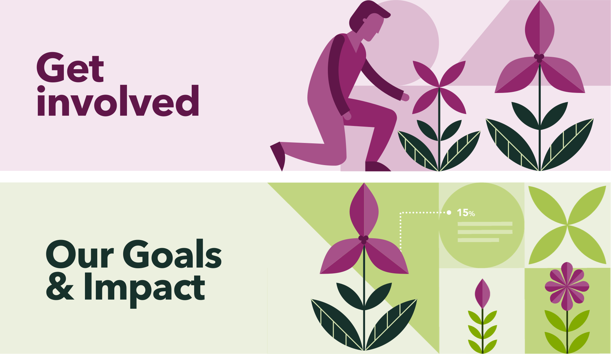
The product
A monitoring app, a web app, and a marketing website.
Research. I partnered with the product manager, who interviewed monitors onsite and shared the insights. From those, I built the user flows and sketched every step of a monitoring report.
Monitoring app. Monitors use their phone in the field instead of a printed form and a GPS unit. The app shows their assignments, guides them to each plant population, and lets them finish reports on site.
Web app. Coordinators and land managers assign monitors and manage sites and species.
Marketing website. It explains the program and recruits new volunteers.
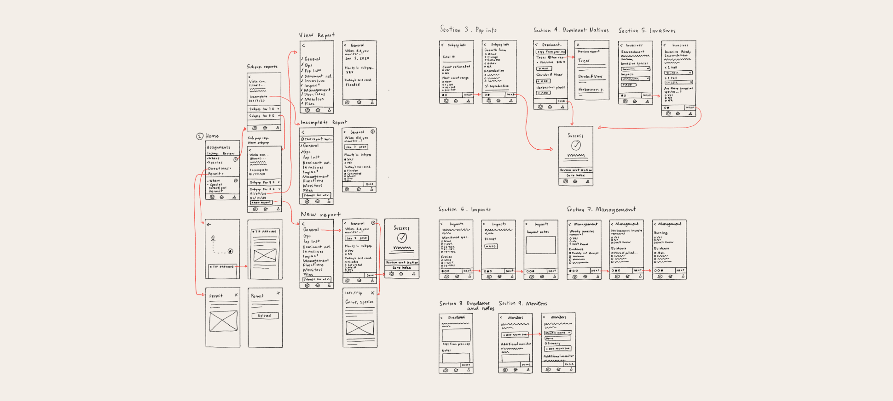
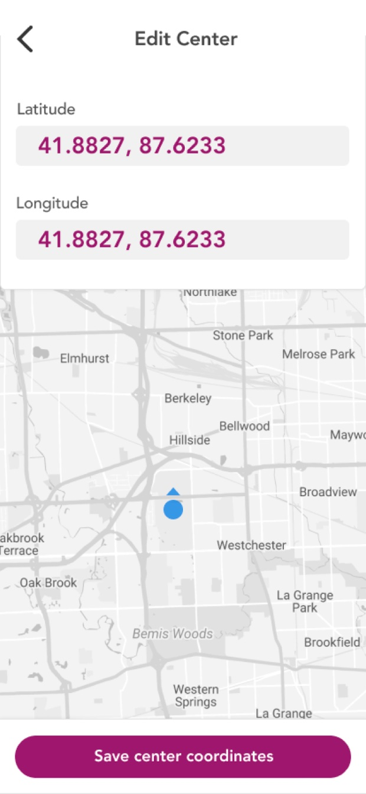
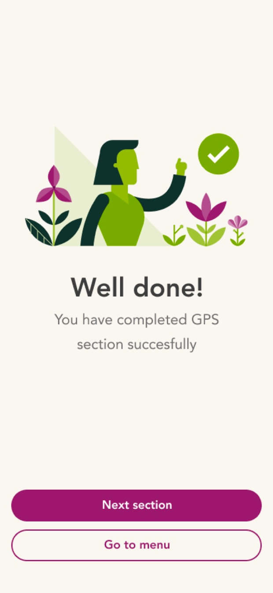
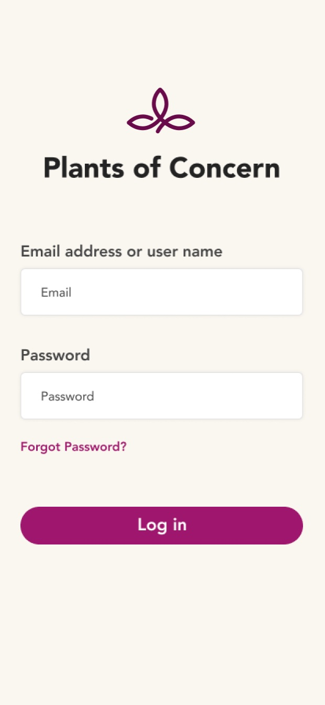
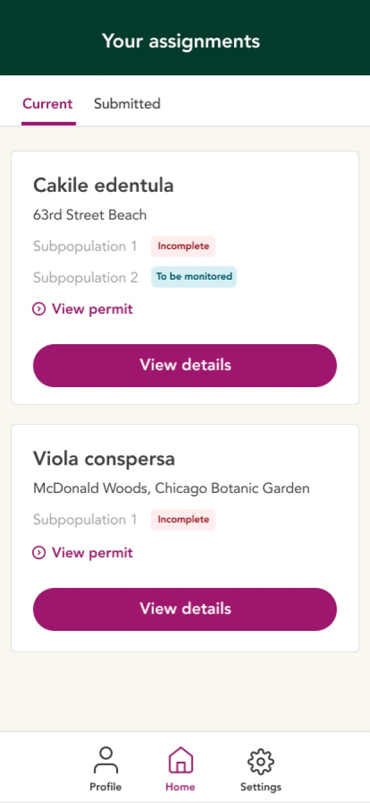
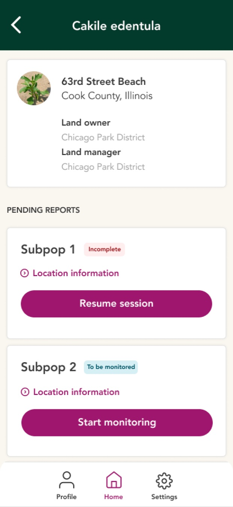
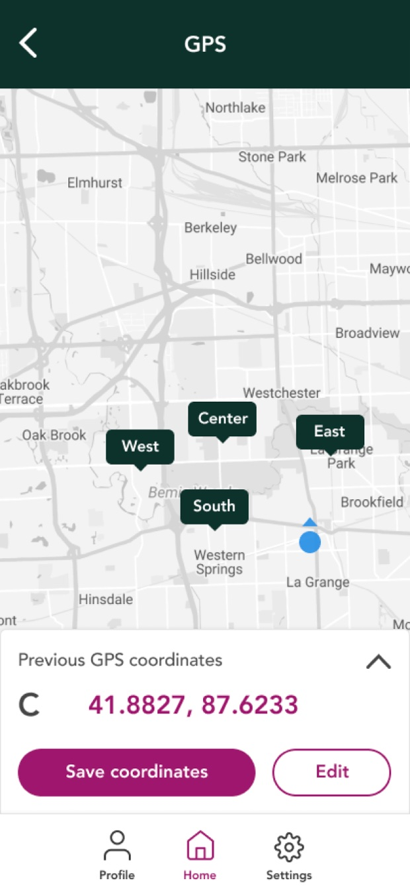
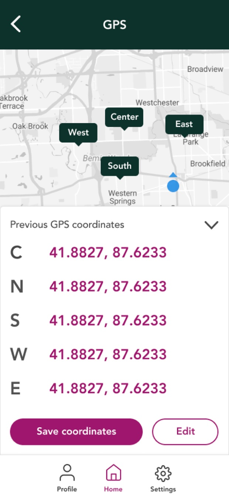
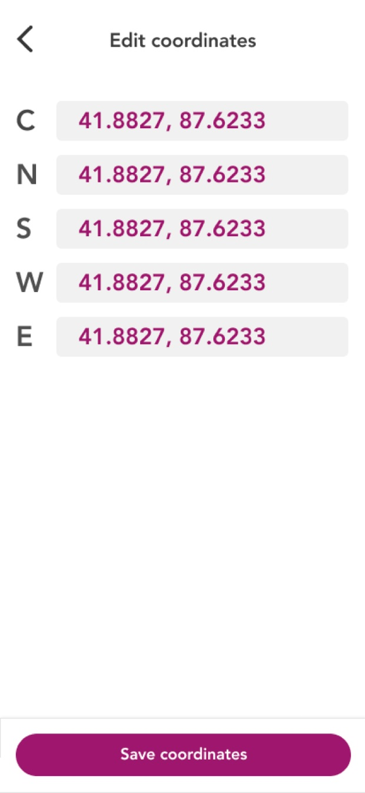
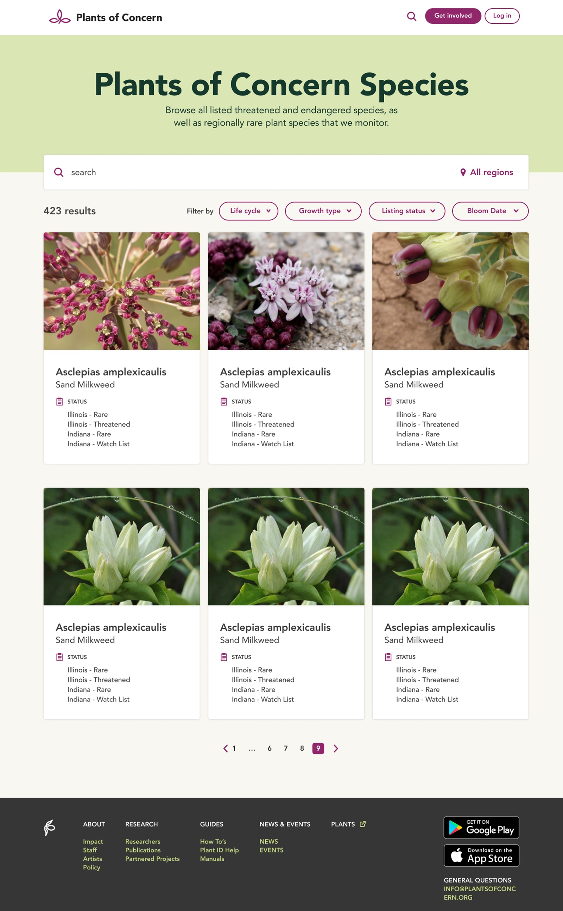
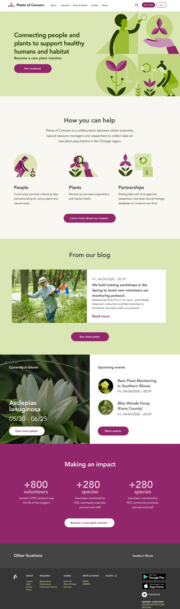
The result
A system that outlasted the rebrand.
A monitoring session went from about 2 hours to about 40 minutes, depending on the site. Monitors only need their phone, there’s nothing left to enter at home, and volunteer sign-ups grew 20%.
The program has kept growing, adding Southern Illinois in 2021 and Northwestern Illinois in 2024 to Northeastern Illinois. The mobile app, web app, and training are also available for other organizations to use.
When the Chicago Botanic Garden redesigned its brand, Plants of Concern became a sub-brand and took on a new logo. The illustration system still leads the website, recolored for the new palette.